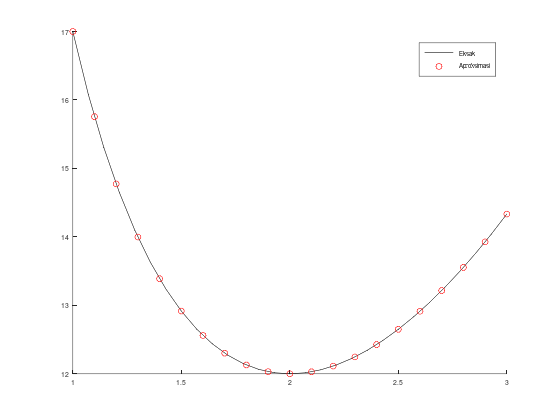
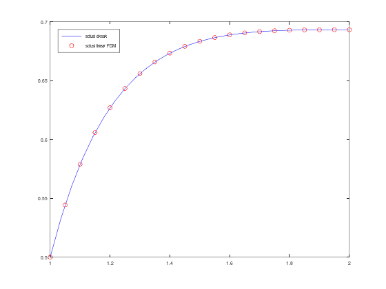

function [t, w] = rko4_sysm(cell_f, a, b, N, alphas)
m = length(cell_f);
h = (b - a) / N;
t = zeros(N + 1, 1);
w = zeros(m, N + 1);
t(1) = a;
w(:, 1) = alphas;
k1 = zeros(m, 1);
k2 = zeros(m, 1);
k3 = zeros(m, 1);
k4 = zeros(m, 1);
for i = 1 : N
t(i + 1) = t(i) + h;
for j = 1 : m
k1(j) = h * cell_f{j}(t(i), w(:, i));
endfor
for j = 1 : m
k2(j) = h * cell_f{j}(t(i) + (h / 2), w(:, i) + (k1 / 2));
endfor
for j = 1 : m
k3(j) = h * cell_f{j}(t(i) + (h / 2), w(:, i) + (k2 / 2));
endfor
for j = 1 : m
k4(j) = h * cell_f{j}(t(i + 1), w(:, i) + k3);
endfor
for j = 1 : m
w(j, i + 1) = w(j, i) + (k1(j) + 2 * k2(j) + 2 * k3(j) + k4(j)) / 6;
endfor
endfor
endfunctionModul 6 Persamaan Diferensial Numerik: Metode Shooting dan Linear Finite Difference untuk Masalah Nilai Batas PDB
Kembali ke Persamaan Diferensial Numerik
Di modul ini, kita akan membahas beberapa metode untuk masalah nilai batas untuk PDB, yaitu:
- Linear Shooting
- Nonlinear Shotting
- Linear Finite Difference
Review: Runge-Kutta orde 4 untuk sistem
Shooting method untuk masalah nilai batas melibatkan sistem persamaan diferensial. Kita akan menggunakan kode metode Runge-Kutta orde 4 untuk sistem dari modul sebelumnya:
Sebenarnya tidak harus metode Runge-Kutta orde 4 untuk sistem. Boleh ditukar dengan metode lainnya untuk sistem, misalnya metode Adams predictor-corrector orde 4 untuk sistem.
Linear Shooting
Bentuk umum, ide utama, penyederhanaan
Linear Shooting merupakan metode untuk menyelesaikan sejenis masalah nilai batas untuk PDB, yaitu yang berbentuk:
\(y'' = f\left(x,y,y'\right) = p(x)y' + q(x)y + r(x), \;a\leq x\leq b\)
\(y(a)=\alpha, \;y(b)=\beta\)
dengan
- \(p(x), q(x), r(x)\) adalah fungsi kontinu dalam \(x\)
- \(q(x) > 0\) pada \([a,b]\) agar dijamin ada solusi unik
Cara penyelesaiannya:
- Selesaikan MNA PDB orde 2 berikut, solusinya disebut \(y_1 \left(x\right)\):
\[y'' = p(x)y' + q(x)y + r(x), \quad a \le x \le b, \quad y\left(a\right) = \alpha, \quad y'\left(a\right) = 0\]
- Selesaikan MNA PDB orde 2 berikut, solusinya disebut \(y_2 \left(x\right)\)
\[y'' = p(x)y' + q(x)y, \quad a \le x \le b, \quad y\left(a\right) = 0, \quad y'\left(a\right) = 1\]
- Solusi akhirnya adalah
\[y\left(x\right) = y_1 \left(x\right) + \frac{\beta - y_1 \left(b\right)}{y_2 \left(b\right)} y_2 \left(x\right)\]
Kita bisa menuliskan kedua MNA PDB orde 2 tersebut masing-masing sebagai sistem PDB orde 1, seperti biasa dengan permisalan \(u_1(x) = y(x)\) dan \(u_2(x) = y'(x)\).
Sehingga, langkahnya menjadi:
- Selesaikan sistem PDB orde 1 berikut. Kemudian solusi \(u_1(x)\) disebut \(y_1(x)\) dan solusi \(u_2(x)\) disebut \(y_1'(x)\).
- Selesaikan sistem PDB orde 1 berikut. Kemudian solusi \(u_1(x)\) disebut \(y_2(x)\) dan solusi \(u_2(x)\) disebut \(y_2'(x)\).
- Solusi akhirnya adalah
\[y(x) = y_1(x) + \frac{\beta - y_1(b)}{y_2(b)} y_2(x)\]
Kalau perlu,
\[y'(x) = y_1'(x) + \frac{\beta - y_1(b)}{y_2(b)} y_2'(x)\]
Function file (dari pseudocode di buku)
function [x_i, w_1i, w_2i] = linshoot_pseudocode(p, q, r, a, b, n, alpha, beta)
h = (b - a)/n;
u = [alpha ; 0];
v = [0 ; 1];
x_i = w_1i = w_2i = [];
for i = 1:n
x = a + (i-1)*h;
k_11 = h * u(2,i);
k_12 = h * (p(x)*u(2,i) + q(x)*u(1,i) + r(x));
k_21 = h * (u(2,i)+(k_12/2));
k_22 = h * (p(x+(h/2))*(u(2,i)+(k_12/2)) + q(x+(h/2))*(u(1,i)+(k_11/2)) + r(x+(h/2)));
k_31 = h * (u(2,i)+(k_22/2));
k_32 = h * (p(x+(h/2))*(u(2,i)+(k_22/2)) + q(x+(h/2))*(u(1,i)+(k_21/2)) + r(x+(h/2)));
k_41 = h * (u(2,i)+k_32);
k_42 = h * (p(x+h)*(u(2,i)+k_32) + q(x+h)*(u(1,i)+k_31) + r(x+h));
u(1,i+1) = u(1,i) + ((k_11 + 2*k_21 + 2*k_31 + k_41)/6);
u(2,i+1) = u(2,i) + ((k_12 + 2*k_22 + 2*k_32 + k_42)/6);
kp_11 = h * v(2,i);
kp_12 = h * (p(x)*v(2,i) + q(x)*v(1,i));
kp_21 = h * (v(2,i) + (kp_12/2));
kp_22 = h * (p(x+(h/2))*(v(2,i)+(kp_12/2)) + q(x+(h/2))*(v(1,i)+(kp_11/2)));
kp_31 = h * (v(2,i)+(kp_22/2));
kp_32 = h * (p(x+(h/2))*(v(2,i)+(kp_22/2)) + q(x+(h/2))*(v(1,i)+(kp_21/2)));
kp_41 = h * (v(2,i)+kp_32);
kp_42 = h * (p(x+h)*(v(2,i)+kp_32) + q(x+h)*(v(1,i)+kp_31));
v(1,i+1) = v(1,i) + (kp_11 + 2*kp_21 + 2*kp_31 + kp_41)/6;
v(2,i+1) = v(2,i) + (kp_12 + 2*kp_22 + 2*kp_32 + kp_42)/6;
endfor
w = [alpha ; ((beta - u(1,(n+1))) / v(1,(n+1)))];
x_i(1) = a;
w_1i(1) = w(1,1);
w_2i(1) = w(2,1);
for i = 2:(n+1)
W1 = u(1,i) + w(2,1)*v(1,i);
W2 = u(2,i) + w(2,1)*v(2,i);
x = a + (i-1)*h;
x_i(i) = x;
w_1i(i) = W1;
w_2i(i) = W2;
endfor
endfunctionFunction file (lebih sederhana)
function [x, w1, w2] = linear_shooting(p, q, r, a, b, N, alph, bet)
% sistem PDB yang pertama
u1_aksen = @(x, u) u(2);
u2_aksen = @(x, u) p(x)*u(2) + q(x)*u(1) + r(x);
[x, w_pers1] = rko4_sysm({u1_aksen, u2_aksen}, a, b, N, [alph, 0]);
y1_b = w_pers1(1, N+1);
% sistem PDB yang kedua
u1_aksen = @(x, u) u(2);
u2_aksen = @(x, u) p(x)*u(2) + q(x)*u(1);
[x, w_pers2] = rko4_sysm({u1_aksen, u2_aksen}, a, b, N, [0, 1]);
y2_b = w_pers2(1, N+1);
% solusi akhir (superposisi)
w_akhir = w_pers1 + (bet - y1_b)/(y2_b) * w_pers2;
% dipisah jadi w1i (aproksimasi y(x)) dan w2i (aproksimasi y'(x))
w1 = w_akhir(1, :);
w2 = w_akhir(2, :);
endfunctionContoh Linear Shooting
\(y'' = -\frac{2}{x}y' + \frac{2}{x^2}y + \frac{\sin(\ln(x))}{x^2}, \; 1\leq x\leq 2\)
\(y(1)=1,\; y(2)=2\)
dengan \(N=10\)
dan solusi eksak:
\(y=c_1x+\frac{c_2}{x^2} - \frac{3}{10}\sin(\ln(x))-\frac{1}{10}cos(\ln(x))\)
\(c_2 = \frac{1}{70}(8-12\sin(\ln(2)) - 4\cos(\ln(2)))\)
\(c_1 = \frac{11}{10}-c_2\)
Berikut code script file untuk permasalahan di atas menggunakan metode linear shooting:
p = @(x) (-2 ./ x);
q = @(x) (2 ./ (x .^ 2));
r = @(x) (sin(log(x))*(x .^ (-2)));
a = 1;
b = 2;
N = 10;
alph = 1;
bet = 2;
[xi, w1i, w2i] = linear_shooting(p, q, r, a, b, N, alph, bet);
% solusi eksak
c2 = (8-12*sin(log(2)) - 4*cos(log(2)))/70;
c1 = (11/10) - c2;
sln = @(x) (c1*x + (c2*x.^(-2)) - (3/10)*sin(log(x)) - (1/10)*cos(log(x)));
y_eksak = sln(xi);
% tampilkan
[xi, w1i', y_eksak]
hold on;
fplot(sln, [a,b], 'k');
scatter(xi, w1i, '-r');
legend('Eksak', 'Aproksimasi');
legend('location', 'northwest');ans =
1.0000 1.0000 1.0000
1.1000 1.0926 1.0926
1.2000 1.1871 1.1871
1.3000 1.2834 1.2834
1.4000 1.3814 1.3814
1.5000 1.4812 1.4812
1.6000 1.5824 1.5824
1.7000 1.6850 1.6850
1.8000 1.7889 1.7889
1.9000 1.8939 1.8939
2.0000 2.0000 2.0000

Jika kita run script file tersebut, maka program akan mengeluarkan dua macam output, yaitu tabel serta plot perbandingan solusi eksak dan aproksimasi seperti di bawah ini:


Nonlinear Shooting
Bentuk umum, ide utama
Nonlinear Shooting digunakan untuk menyelesaikan masalah PD berbentuk:
\(y'' = f(x, y, y'), \; a\leq x \leq b\)
\(y(a)=\alpha, \; y(b)=\beta\)
dengan \(f\) boleh berupa fungsi linier maupun nonlinier
Cara penyelesaiannya:
- Tentukan toleransi \(\varepsilon\), dan pilih tebakan awal \(t_0\) (yaitu \(t_k\) sebelum iterasi pertama, yaitu dengan \(k=0\)). Kalau bingung, disarankan
\[t_0 = \frac{\beta - \alpha}{b-a}\]
- Selesaikan MNA PDB orde 2 berikut, misalkan solusinya disebut \(w(x,t_k)\):
\[y'' = f(x,y,y'), \quad a \le x \le b, \quad y(a) = \alpha, \quad y'(a) = t_k\]
Periksa apakah \(\left|w(x,t_k) - \beta\right| \le \varepsilon\).
- Kalau iya, selesai; solusi akhirnya adalah \(y(x) = w(x,t_k)\).
- Kalau tidak, peroleh tebakan baru untuk \(t_i\) (misalnya dengan metode secant atau metode Newton), lalu kembali ke langkah 2.
Seperti biasa, kita bisa misalkan \(u_1(x) = y(x)\) dan \(u_2(x) = y'(x)\) agar MNA PDB orde 2 menjadi sistem PDB orde 1.
Cara penyelesaiannya menjadi:
- Tentukan toleransi \(\varepsilon\), dan pilih tebakan awal \(t_0\) (yaitu \(t_k\) sebelum iterasi pertama, yaitu dengan \(k=0\)). Kalau bingung, disarankan
\[t_0 = \frac{\beta - \alpha}{b-a}\]
- Selesaikan sistem PDB orde 1 berikut. Kemudian \(u_1(x)\) disebut \(w(x,t_k)\) dan \(u_2(x)\) disebut \(w'(x,t_k)\).
Periksa apakah \(\left|w(x,t_k) - \beta\right| \le \varepsilon\).
- Kalau iya, selesai; solusi akhirnya adalah \(y(x) = w(x,t_k)\).
- Kalau tidak, peroleh tebakan baru untuk \(t_k\) (misalnya dengan metode secant atau metode Newton), lalu kembali ke langkah 2.
Function file (metode secant)
function [x, w1, w2] = nonlinear_shooting_secant(f, a, b, N, alph, bet, tol, t0, t1)
u1_aksen = @(x, u) u(2);
u2_aksen = @(x, u) f(x, u(1), u(2));
t_k_min_2 = t0;
t_k_min_1 = t1;
[x, w_k_min_2] = rko4_sysm({u1_aksen, u2_aksen}, a, b, N, [alph, t_k_min_2]);
[x, w_k_min_1] = rko4_sysm({u1_aksen, u2_aksen}, a, b, N, [alph, t_k_min_1]);
w_k = w_k_min_1;
err = abs(w_k(1, N+1) - bet);
while !(err <= tol)
pembilang = (w_k_min_1(1,N+1) - bet) * (t_k_min_1 - t_k_min_2);
penyebut = w_k_min_1(1,N+1) - w_k_min_2(1,N+1);
t_k = t_k_min_1 - pembilang/penyebut;
t_k_min_2 = t_k_min_1
t_k_min_1 = t_k
[x, w_k] = rko4_sysm({u1_aksen, u2_aksen}, a, b, N, [alph, t_k]);
err = abs(w_k(1, N+1) - bet);
endwhile
% keluar loop artinya toleransi sudah terpenuhi
% memisahkan w_k menjadi w1i dan w2i
w1 = w_k(1, :);
w2 = w_k(2, :);
endfunctionModifikasi untuk metode Newton
Untuk menggunakan metode Newton, diperlukan tidak hanya \(y(b,t)\) tetapi juga turunannya \(\frac{\partial y(b,t)}{\partial t}\) yang sayangnya tidak dimiliki.
Setelah penjabaran yang panjang di buku, ternyata bisa dimisalkan
\[z(x,t) = \frac{\partial y(x,t)}{\partial t}\]
dan nilai fungsi \(z\) ini ternyata bisa diperoleh dengan menyelesaikan suatu MNA PDB orde 2 (lagi). Sehingga, di tiap iterasi, ada dua MNA PDB orde 2 yang harus diselesaikan.
Langkah nonlinear shooting dengan metode Newton bisa ditulis:
Hitung rumus \(\frac{\partial f}{\partial y}(x,y,y')\) dan rumus \(\frac{\partial f}{\partial y'}(x,y,y')\) secara analitik.
Tentukan toleransi \(\varepsilon\), dan pilih tebakan awal \(t_0\) (yaitu \(t_k\) sebelum iterasi pertama, yaitu dengan \(k=0\)). Kalau bingung, disarankan
\[t_0 = \frac{\beta - \alpha}{b-a}\]
- Selesaikan MNA PDB orde 2 berikut, misalkan solusinya disebut \(w(x,t_k)\):
\[y'' = f(x,y,y'), \quad a \le x \le b, \quad y(a) = \alpha, \quad y'(a) = t_k\]
- Selesaikan MNA PDB orde 2 berikut:
\[z'' = \frac{\partial f}{\partial y}(x,y,y')z(x) + \frac{\partial f}{\partial y'}(x,y,y')z'(x), \quad z(a) = 0, \quad z'(a) = 1\]
Periksa apakah \(\left|w(x,t_k) - \beta\right| \le \varepsilon\).
- Kalau iya, selesai; solusi akhirnya adalah \(y(x) = w(x,t_k)\).
- Kalau tidak, kembali ke langkah 3 setelah memperoleh tebakan baru untuk \(t_k\): \[t_k = t_{k-1} - \frac{w(b, t_{k-1}) - \beta}{z(b, t_{k-1})}\]
Dengan permisalan \(u_1\) dan \(u_2\) agar PDB orde 2 menjadi sistem PDB orde 1, langkah-langkahnya menjadi:
Hitung rumus \(\frac{\partial f}{\partial y}(x,y,y')\) dan rumus \(\frac{\partial f}{\partial y'}(x,y,y')\) secara analitik.
Tentukan toleransi \(\varepsilon\), dan pilih tebakan awal \(t_0\) (yaitu \(t_k\) sebelum iterasi pertama, yaitu dengan \(k=0\)). Kalau bingung, disarankan
\[t_0 = \frac{\beta - \alpha}{b-a}\]
- Selesaikan sistem PDB orde 1 berikut. Kemudian \(u_1(x)\) disebut \(w(x,t_k)\) dan \(u_2(x)\) disebut \(w'(x,t_k)\).
- Selesaikan sistem PDB orde 1 berikut. Kemudian \(u_1(x)\) disebut \(z(x,t_k)\) dan \(u_2(x)\) disebut \(z'(x,t_k)\).
Periksa apakah \(\left|w(x,t_k) - \beta\right| \le \varepsilon\).
- Kalau iya, selesai; solusi akhirnya adalah \(y(x) = w(x,t_k)\).
- Kalau tidak, kembali ke langkah 3 setelah memperoleh tebakan baru untuk \(t_k\): \[t_k = t_{k-1} - \frac{w(b, t_{k-1}) - \beta}{z(b, t_{k-1})}\]
Function file (dari pseudocode)
function [x_i, w_1i, w_2i] = nonlinshoot_pseudocode(f, fy, fyp, a, b, n, alpha, beta, m, tol)
% m adalah maksimum iterasi
h = (b - a)/n;
k = 1;
tk = (beta - alpha)/(b - a);
x_i = w_1i = w_2i = [];
while k <= m
w = [alpha;tk];
u = [0,1];
for i = 1:n
x = a + (i-1)*h;
k_11 = h*w(2,i);
k_12 = h*f(x, w(1,i), w(2,i));
k_21 = h*(w(2,i)+(k_12/2));
k_22 = h*f((x+(h/2)), (w(1,i)+(k_11/2)), (w(2,i)+(k_12/2)));
k_31 = h*(w(2,i)+(k_22/2));
k_32 = h*f((x+(h/2)), (w(1,i)+(k_21/2)), (w(2,i)+(k_22/2)));
k_41 = h*(w(2,i)+k_32);
k_42 = h*f((x+h), (w(1,i)+k_31), (w(2,i)+k_32));
w(1,i+1) = w(1,i) + ((k_11 + 2*k_21 + 2*k_31 + k_41)/6);
w(2,i+1) = w(2,i) + ((k_12 + 2*k_22 + 2*k_32 + k_42)/6);
kp_11 = h*u(2);
kp_12 = h*(fy(x, w(1,i), w(2,i))*u(1) + fyp(x, w(1,i), w(2,i))*u(2));
kp_21 = h*(u(2) + (kp_12/2));
kp_22 = h*(fy((x+(h/2)), w(1,i), w(2,i))*u(1) + fyp((x+(h/2)), w(1,i), w(2,i))*(u(2) + (kp_12/2)));
kp_31 = h*(u(2)+(kp_22/2));
kp_32 = h*(fy((x+(h/2)), w(1,i), w(2,i))*(u(1) + (kp_21/2)) + fyp((x+(h/2)), w(1,i), w(2,i))*(u(2) + (kp_22/2)));
kp_41 = h*(u(2)+kp_32);
kp_42 = h*(fy((x+h), w(1,i), w(2,i))*(u(1)+kp_31) + fyp((x+h), w(1,i), w(2,i))*(u(2) + kp_32));
u(1) = u(1) + (kp_11 + 2*kp_21 + 2*kp_31 + kp_41)/6;
u(2) = u(2) + (kp_12 + 2*kp_22 + 2*kp_32 + kp_42)/6;
endfor
if abs(w(1,n+1) - beta) <= tol % jika sudah mencapai batas toleransi maka program berhenti
for i = 1:(n+1)
x = a+(i-1)*h;
x_i(i) = x;
w_1i(i) = w(1,i);
w_2i(i) = w(2,i);
endfor
return
endif
tk = tk-((w(1,n+1) - beta)/u(1));
k = k + 1;
endwhile
disp('max iteration')
endfunctionFunction file (metode Newton)
function [x, w1, w2] = nonlinear_shooting_newton(f, fy, fyp, a, b, N, alph, bet, tol, t0)
% kalau input t0 bukan angka, dianggap tidak memilih tebakan awal
if isnumeric(t0)
t_k = t0;
else
t_k = (bet-alph)/(b-a);
endif
err = tol + 1;
while !(err <= tol)
% selesaikan sistem pertama
u1_aksen = @(x, u) u(2);
u2_aksen = @(x, u) f(x, u(1), u(2));
[x, w_sys] = rko4_sysm({u1_aksen, u2_aksen}, a, b, N, [alph, t_k]);
% selesaikan sistem kedua
u1_aksen = @(x, u) u(2);
u2_aksen = @(x, u) fy(x, u(1), u(2))*u(1) + fyp(x, u(1), u(2))*u(2);
[x, z_sys] = rko4_sysm({u1_aksen, u2_aksen}, a, b, N, [0, 1]);
% periksa toleransi, update t_k
err = abs(w_sys(1, N+1) - bet);
if !(err <= tol)
t_k = t_k - (w_sys(1, N+1) - bet)/(z_sys(1, N+1));
endif
endwhile
% keluar loop artinya toleransi sudah terpenuhi
% pisahkan w_sys menjadi w1i dan w2i
w1 = w_sys(1, :);
w2 = w_sys(2, :);
endfunctionContoh Nonlinear Shooting
\(y'' = \frac{1}{8}(32+2x^3-yy'), \; 1\leq x \leq 3\)
\(y(1) = 17, \; y(3)=43/3\)
dengan \(N=20\) dan toleransi \(=10^{-5}\)
dan solusi eksak:
\(y(x)=x^2 + \frac{16}{x}\)
Hint:
\[\begin{aligned} f(x,y,y') &= \frac{1}{8}(32+2x^3-yy') \\ \frac{\partial f}{\partial y}(x,y,y') &= -\frac{1}{8}y' \\ \frac{\partial f}{\partial y'}(x,y,y') &= -\frac{1}{8}y \end{aligned}\]Berikut code script file untuk permasalahan di atas menggunakan metode linear shooting:
f = @(x, y, yp) ((1/8)*(32 + 2 * x.^3 - y .* yp));
fy = @(x, y, yp) (-yp/8);
fyp = @(x, y, yp) (-y/8);
a = 1;
b = 3;
N = 20;
alph = 17;
bet = 43/3;
tol = 10^(-5);
[xi, w1i, w2i] = nonlinear_shooting_newton(f, fy, fyp, a, b, N, alph, bet, tol, "");
sln = @(x) ((x .^ 2) + (16 ./ x));
y_eksak = sln(xi);
[xi, w1i', y_eksak]
hold on;
fplot(sln, [a,b], 'k');
scatter(xi, w1i', 'r');
legend('Eksak', 'Aproksimasi');ans =
1.0000 17.0000 17.0000
1.1000 15.7555 15.7555
1.2000 14.7734 14.7733
1.3000 13.9978 13.9977
1.4000 13.3886 13.3886
1.5000 12.9167 12.9167
1.6000 12.5601 12.5600
1.7000 12.3018 12.3018
1.8000 12.1289 12.1289
1.9000 12.0311 12.0311
2.0000 12.0000 12.0000
2.1000 12.0291 12.0290
2.2000 12.1128 12.1127
2.3000 12.2465 12.2465
2.4000 12.4267 12.4267
2.5000 12.6500 12.6500
2.6000 12.9139 12.9138
2.7000 13.2159 13.2159
2.8000 13.5543 13.5543
2.9000 13.9272 13.9272
3.0000 14.3333 14.3333

Jika kita run script file tersebut, maka program akan mengeluarkan dua macam output, yaitu tabel serta plot perbandingan solusi eksak dan aproksimasi seperti di bawah ini:
Linear Finite Difference
Metode ini digunakan untuk mengaproksimasi masalah linear dalam bentuk:
\[\begin{gathered} y^{\prime \prime}=p(x) y^{\prime}+q(x) y+r(x), \quad a \leq x \leq b \\ y(a)=\alpha, y(b)=\beta \end{gathered}\]Penyelesaiannya adalah dengan persamaan-persamaan berikut:
\[\begin{gathered} w_{0}=\alpha, \quad w_{N+1}=\beta \\ -\left(1+\frac{h}{2} p\left(x_{i}\right)\right) w_{i-1}+\left(2+h^{2} q\left(x_{i}\right)\right) w_{i}-\left(1-\frac{h}{2} p\left(x_{i}\right)\right) w_{i+1}=-h^{2} r\left(x_{i}\right) \end{gathered}\]Bentuk tersebut dapat dibuat sebagai suatu SPL:
\[ A \mathbf{w}=\mathbf{b} \]

\(\mathbf{w}=\left[\begin{array}{c}w_{1} \\ w_{2} \\ \vdots \\ w_{N-1} \\ w_{N}\end{array}\right], \quad\) and \(\quad \mathbf{b}=\left[\begin{array}{c}-h^{2} r\left(x_{1}\right)+\left(1+\frac{h}{2} p\left(x_{1}\right)\right) w_{0} \\ -h^{2} r\left(x_{2}\right) \\ \vdots \\ -h^{2} r\left(x_{N-1}\right) \\ -h^{2} r\left(x_{N}\right)+\left(1-\frac{h}{2} p\left(x_{N}\right)\right) w_{N+1}\end{array}\right]\).
Menurut buku, SPL tersebut sebaiknya diselesaikan dengan metode faktorisasi Crout (algoritma 6.7). (Intinya, mumpung A adalah matriks tridiagonal, algoritma ini nyari inverse A secara linier, makanya runtime dari algortima ini adalah \(O(n)\))
Namun, tentunya kita bebas menyelesaikan SPLnya dengan cara apapun, bahkan dengan cara iteratif seperti Gauss-Seidel
Function file (dari pseudocode)
function [xt,w]=linfdm_pseudocode(p,q,r,a_boundary,b_boundary,alpha,beta,n)
h=(b_boundary-a_boundary)/(n+1); %stepsize
a=zeros(n,1); %diagonal sistem persamaannya
b=zeros(n,1); % right diagonal sistem persamaannya
c=zeros(n,1); %left diagonal sistem persamaannya
d=zeros(n,1); %vektor b (Ay=b) pada sistem persamaannya
l=zeros(n,1); % main diagonal of lower triangle matrix
u=zeros(n,1); %right diagonal of upper triangle matrix
z= zeros(n,1); %solution of Lz=b
w=zeros(n+1,1); %solusi aproksimasi dengan linear fdm
xt=[a_boundary:h:b_boundary]; %mesh_point
x=a_boundary+h;
%konstruksi matrix tridiagonalnya
a(1)=2+(h^2)*q(x);
b(1)= -1+(h/2)*p(x);
d(1)=-h^2*r(x) +(1+(h/2)*p(x))*alpha;
for i = 2:n-1
x= a_boundary+i*h;
a(i)=2+h^2*q(x); %diagonal
b(i)=-1+(h/2)*p(x);
c(i)=-1-(h/2)*p(x);
d(i)=-h^2*r(x);
endfor
x=b_boundary-h;
a(n)=2+h^2*q(x);
c(n)=-1-(h/2)*p(x);
d(n)=-h^2*r(x)+(1-(h/2)*p(x))*beta;
%matriks tridiagonalnya sudah didapatkan,
%akan diselesaikan dengan LU Decomposition (crout factorization)
l(1)= a(1);
u(1)=b(1)/a(1);
z(1)=d(1)/l(1);
for i= 2:n-1
l(i)=a(i)-c(i)*u(i-1);
u(i)=b(i)/l(i);
z(i)=(d(i)-c(i)*z(i-1))/l(i);
endfor
l(n)=a(n)-c(n)*u(n-1);
z(n)=(d(n)-c(n)*z(n-1))/l(n);
%konstruksi akhir w-nya
w(n+1)=beta;
w(n)=z(n);
for i = n-1:-1:1
w(i)=z(i)-u(i)*w(i+1);
endfor
w=[alpha;w];
xt=transpose(xt);
endfunctionFunction file (dengan solusi SPL secara eksak/invers)
function [x, w_grid] = linear_fd_eksak(p, q, r, a, b, N, alph, bet)
% bikin array x
h = (b - a) / (N+1);
x = a : h : b;
% susun matriks A dan vektor b
A = zeros(N, N);
b = -h^2 * r(x(2:N+1));
% kasus khusus untuk baris pertama
b(1) += (1 + h/2 * p(x(2))) * alph;
A(1, 1) += 2 + h^2 * q(x(2));
A(1, 2) += -1 + h/2 * p(x(2));
% kasus khusus untuk baris terakhir
A(N, N-1) += -1 - h/2 * p(x(N+1));
A(N, N) += 2 + h^2 * q(x(N+1));
b(N) += (1 - h/2 * p(x(N+1))) * bet;
% untuk baris kedua hingga kedua-terakhir
for i = 2 : (N-1)
A(i, i-1) += -1 - h/2 * p(x(i+1));
A(i, i) += 2 + h^2 * q(x(i+1));
A(i, i+1) += -1 + h/2 * p(x(i+1));
endfor
% selesaikan SPL
w = A \ b';
% w baru mengandung w1, ..., w_N
% gabungkan dengan w0 (alpha) dan w_{N+1} (beta)
w_grid = [alph w' bet];
endfunctionContoh Linear Finite Difference
Akan kita uji dengan masalah nilai batas:
\[ \begin{aligned} y^{\prime \prime} & =-\frac{4}{x} y^{\prime}-\frac{2}{x^2} y+\frac{2 \ln x}{x^2}, \quad 1 \leq x \leq 2 \\ y(1) & =\frac{1}{2}, \quad y(2)=\ln 2 \end{aligned} \] Solusi eksak: \[ y(x)=\frac{4}{x}-\frac{2}{x^2}+\ln x-\frac{3}{2} \]
p= @(x) (-4./x); %function p(x)
q= @(x) (-2./x.^2);%function q(x)
r=@(x) 2*log(x)./(x.^2); %function r(x)
a=1; %batas kiri domain
b=2; %batas kanan domain
N=20; %banyaknya partisi
alph=0.5; %y(a)=alpha
bet=log(2); %y(b)=beta
[x_grid,w_grid] = linear_fd_eksak(p,q,r,a,b,N,alph,bet); %memangil fungsinya
sln = @(x) 4./x - 2./(x.^2) + log(x) - 1.5;
y_eksak = sln(x_grid);
err = abs(y_eksak - w_grid);
%bikin tabel dan grafiknya :D
[x_grid', w_grid', y_eksak', err']
hold on;
fplot(sln, [a,b], 'b')
scatter(x_grid, w_grid, 'r')
legend('Eksak', 'Aproksimasi');ans =
1.0000 0.5000 0.5000 0
1.0476 0.5425 0.5424 0.0001
1.0952 0.5759 0.5758 0.0001
1.1429 0.6024 0.6023 0.0001
1.1905 0.6233 0.6232 0.0001
1.2381 0.6397 0.6396 0.0001
1.2857 0.6527 0.6525 0.0001
1.3333 0.6628 0.6627 0.0001
1.3810 0.6707 0.6706 0.0001
1.4286 0.6768 0.6767 0.0001
1.4762 0.6814 0.6813 0.0001
1.5238 0.6850 0.6849 0.0001
1.5714 0.6876 0.6875 0.0001
1.6190 0.6895 0.6895 0.0001
1.6667 0.6909 0.6908 0.0000
1.7143 0.6918 0.6918 0.0000
1.7619 0.6924 0.6924 0.0000
1.8095 0.6928 0.6928 0.0000
1.8571 0.6930 0.6930 0.0000
1.9048 0.6931 0.6931 0.0000
1.9524 0.6931 0.6931 0.0000
2.0000 0.6931 0.6931 0.0000
